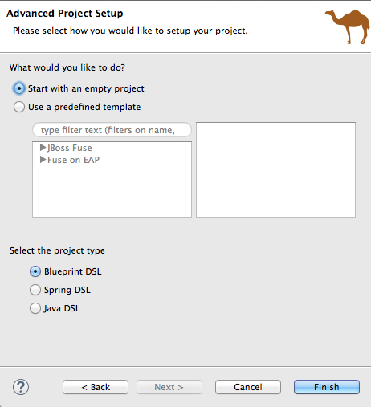
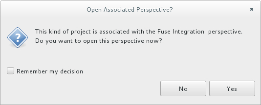
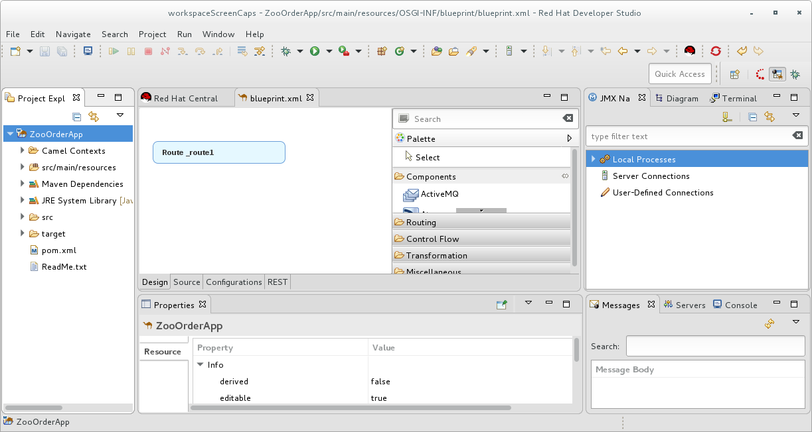
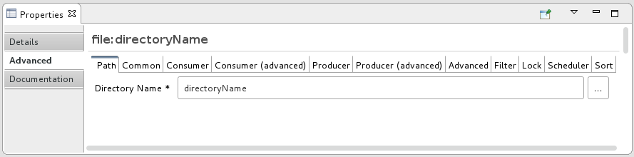
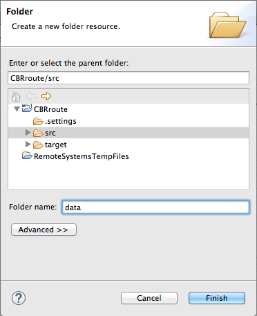
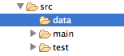
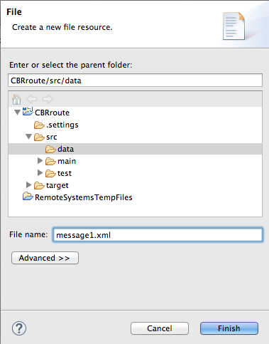
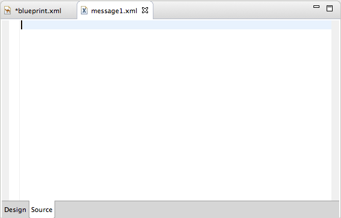

This tutorial walks you through the process of creating a Fuse Integration project, adding a route to it, and adding two endpoints to the route. It assumes that you have already set up your workspace and that Red Hat JBoss Fuse Tooling is running inside Red Hat JBoss Developer Studio.
In this tutorial you will:
Create a Fuse Integration project
Create a new routing context
Create a route
Add file endpoints to the route
Connect the endpoints
Configure the endpoints
Create a folder in your project to store test messages that you create for your route
Create the test messages
JBoss Developer Studio 10.3.0 installed
Red Hat JBoss Fuse Tooling 9.2.0 installed in JBoss Developer Studio 10.3.0
In Developer Studio, select > > > and confirm selection of this option: . This ensures that the label of the patterns and components that you place on the canvas will be the same as the labels shown in these tutorials.
When you start Developer Studio for the first time, it opens in the JBoss perspective:
![[Note]](imagesdb/note.png) | Note |
|---|---|
You can start this tutorial in the JBoss perspective or in the Fuse Integration perspective. If you start it in the JBoss perspective, the tooling will ask to switch you to the Fuse Integration perspective at the appropriate point in the tutorial. |
To create a Fuse Integration project:
From the menu bar, select > > > > to open the New Fuse Integration Project wizard:
In the Project Name field, enter
CBRroute.Leave the Use default workspace location option as is.
Click to open the Select a Target Runtime page:
Accept for Target Runtime, and for Camel Version.
Note You will add the runtime later in the tutorial To Publish a Fuse Project to Red Hat JBoss Fuse.
Click to open the Advanced Project Setup page:
Leave the Start with an empty project and Blueprint DSL options selected.
Click .
Fuse Tooling starts downloading from the Maven repository all of the files it needs to build the project, and then adds the new project to Project Explorer.
If you are not in the Fuse Integration perspective, the tooling asks whether you want to switch to it now:
Click to open the new
CBRrouteproject in the Fuse Integration perspective:The new
CBRrouteproject contains everything needed to create and run routes. As shown in Figure 1, the files generated forCBRrouteinclude:CBRroute/pom.xml(Maven project file)CBRroute/src/main/resources/OSGI-INF/blueprint/blueprint.xml(Blueprint XML file containing the routing rules)
Note Notice that the
pom.xmlentry in Project Explorer is decorated wth a warning symbol.You can safely ignore this warning or eliminate it by opening the
pom.xmlfile in the tooling's XML editor, and delete the<version>element from each dependency:camel-core,camel-blueprint, andcamel-test-blueprint. Save thepom.xmlfile.
To create the route:
Click the Design tab at the bottom, left of the canvas to return to the route editor's Design view.
Drag a File component (
 ) from the Palette's
Components drawer to the canvas, and drop it in the
Route_route1 container node.
) from the Palette's
Components drawer to the canvas, and drop it in the
Route_route1 container node.The File component changes to a From _from1 node inside the Route_route1 container node.
On the canvas, select the From _from1 node.
The Properties editor, located below the canvas, displays the node's property fields for editing.
In the Properties editor, select the Advanced tab:
You need to create a folder for the project's source data and enter that folder's name in the Directory Name field.
In Project Explorer, right-click
CBRroute/src/to open the context menu.Select > to open the New Folder wizard:
Check that
CBRroute/srcappears in the Enter or select the parent folder field. Otherwise enter it manually, or select it from the graphical representation of the project's hierarchy.In the Folder name field, enter
data, and then click Finish.The new
datafolder appears in Project Explorer, under thesrcfolder:
In Properties editor, return to the From _from1 node's Advanced tab.
In the Directory Name field, enter
src/data:The path
src/datais relative to the project's directory.On the Consumer tab, enable the Noop option by clicking its check box.
The Noop option prevents the
message#.xmlfiles being deleted from thesrc/datafolder, and it enables idempotency to ensure that eachmessage#.xmlfile is consumed only once.Select the Details tab to open the file node's Details page.
The tooling automatically populates the Uri field with the Directory Name and Noop properties you configured on the Advanced tab. It also populates the Id field with an autogenerated ID (
_from1):Leave the autogenerated Id as is.
Drag another File component from the Palette's Components drawer and drop it in the Route_route1 container node.
The File component changes to a To _to1 node inside the Route_route1 container node.
On the canvas, select the To _to1 node.
The Properties editor, located below the canvas, displays the node's property fields for editing.
On the Details tab, enter
file:target/messages/othersin the Uri field, and_Othersin the Id field:Note The tooling will create the
target/messages/othersfolder at runtime.In the Route_route1 container, select the From _from1 node and drag it's connector arrow (
 ) over the To_Others node, then release
it:
) over the To_Others node, then release
it:Note The two file nodes are connected and aligned on the canvas according to the route editor's layout direction preference setting. The choices are
RightandDown(default).Note If you do not connect the nodes before you close the project, the tooling automatically connects them when you reopen it.
Select > to save the route.
Click the Source tab at bottom, left of the canvas.
Source view displays the XML for the route. The
camelContextelement will look like Example 1:Example 1. XML for CBRroute
<?xml version="1.0" encoding="UTF-8"?> <blueprint xmlns="http://www.osgi.org/xmlns/blueprint/v1.0.0" xmlns:xsi="http://www.w3.org/2001/XMLSchema-instance" xsi:schemaLocation="http://www.osgi.org/xmlns/blueprint/v1.0.0 https://www.osgi.org/xmlns/blueprint/v1.0.0/blueprint.xsd http://camel.apache.org/schema/blueprint http://camel.apache.org/schema/blueprint/camel-blueprint.xsd"> <camelContext id="_context1" xmlns="http://camel.apache.org/schema/blueprint"> <route id="_route1"> <from id="_from1" uri="file:src/data?noop=true"/> <to id="_Others" uri="file:target/messages/others"/> </route> </camelContext> </blueprint>
Before you can run your route, you need to create test messages to send through it.
In Project Explorer, right-click
CBRrouteto open the context menu.Click > to open the New File wizard:
Check that
CBRroute/src/dataappears in the Enter or select the parent folder field. Otherwise enter it manually, or select it from the graphical representation of the project's hierarchy.In the field, enter
message1.xml.Click to open the test message,
message1.xml, in Design View:
Click the tab at the bottom of the canvas to switch to view:
In view, enter this text:
<?xml version="1.0" encoding="UTF-8"?> <order> <customer> <name>Brooklyn Zoo</name> <city>Brooklyn</city> <country>USA</country> </customer> <orderline> <animal>wombat</animal> <quantity>15</quantity> <maxAllowed>25</maxAllowed> </orderline> </order>Note You can safely ignore the
 on the last line of the newly created
on the last line of the newly created
message1.xmlfile, which advises you that there are no grammar constraints (DTD or XML Schema) referenced by the document.Save the file, and close it.
If you haven't already done so, download the prefabricated test message files (see Using the Fuse Tooling Resource Files for instructions). Copy
message2.xmlthroughmessage6.xmlinto the newly createdCBRroute/src/datafolder. You will use all six test messages in the remaining Fuse Tooling tutorials.Table 1 shows the contents of each remaining prefabricated message file.
Table 1. Preconstructed test messages
msg# <name> <city> <country> <animal> <quantity> <maxAllowed> 2 San Diego Zoo San Diego USA giraffe 3 2 3 London Zoo London Great Britain penguin 12 20 4 Bristol Zoo Bristol Great Britain emu 5 4 5 Paris Zoo Paris France giraffe 2 2 6 Hellabrunn Gardens Munich Germany penguin 18 20
After you have created and designed your route, you can run it by deploying it into your local Apache Camel runtime, as described in To Run a Route.
To learn more about:
Using the editor, see Red Hat JBoss Fuse Tooling: JBoss Fuse Tooling User Guide at https://access.redhat.com/documentation/en-US/Red_Hat_JBoss_Fuse/6.3/html/Tooling_User_Guide/RiderDevPart.html.
Apache Camel endpoints, see Red Hat JBoss Fuse: Component Reference.